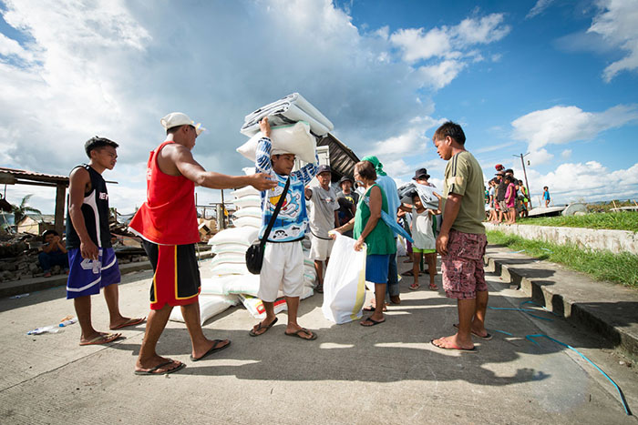
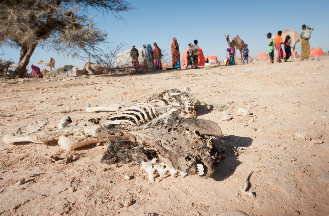
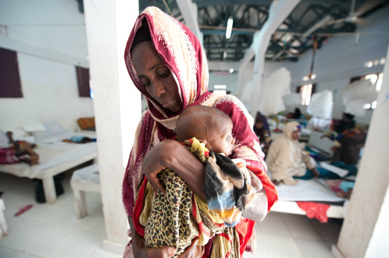
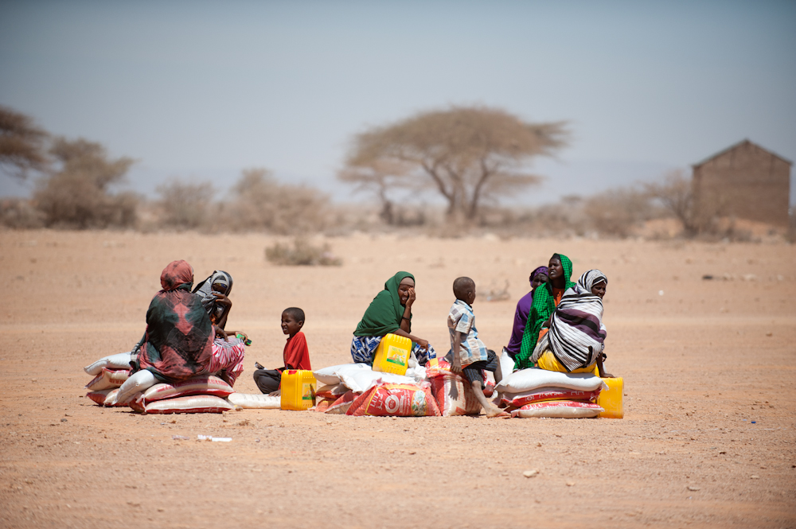
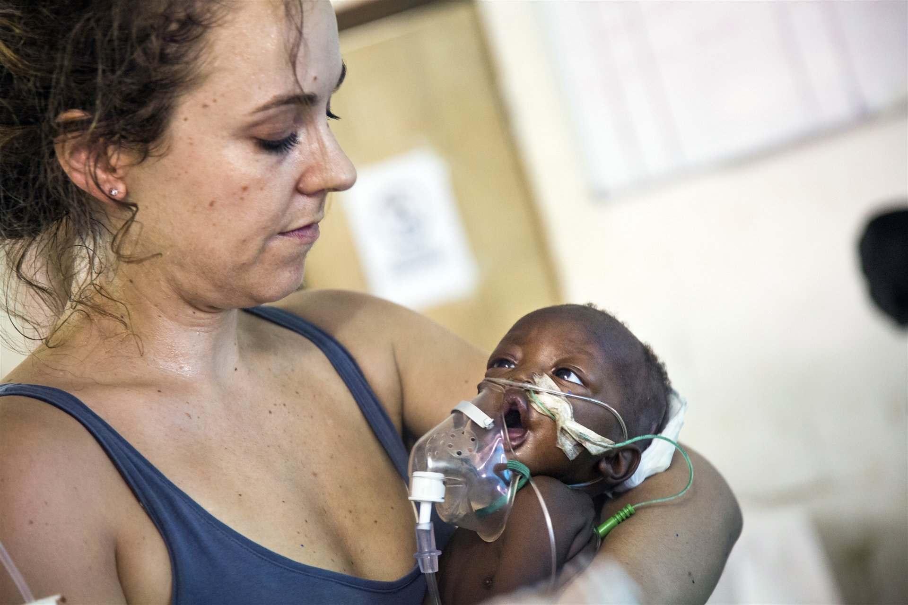
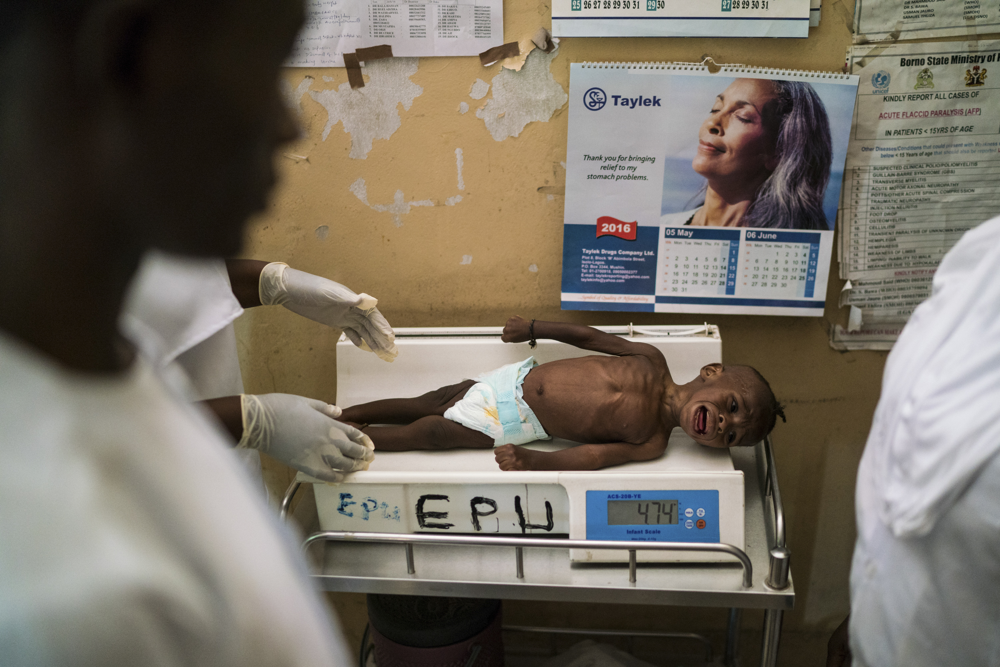
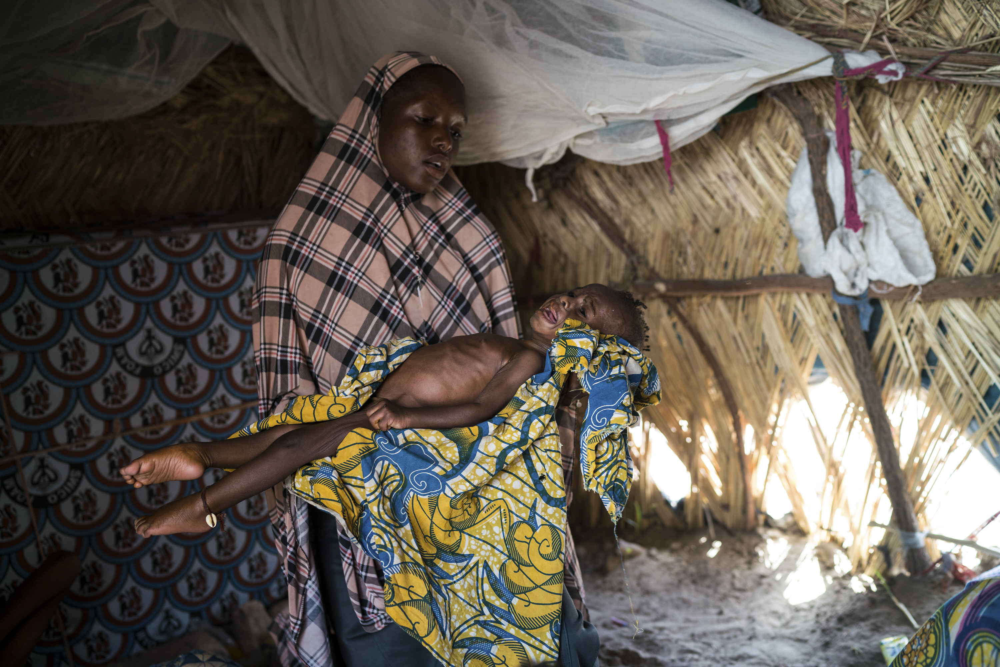
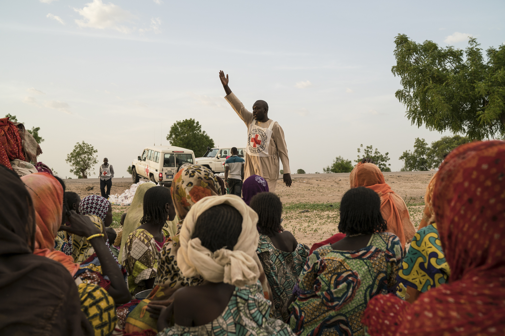
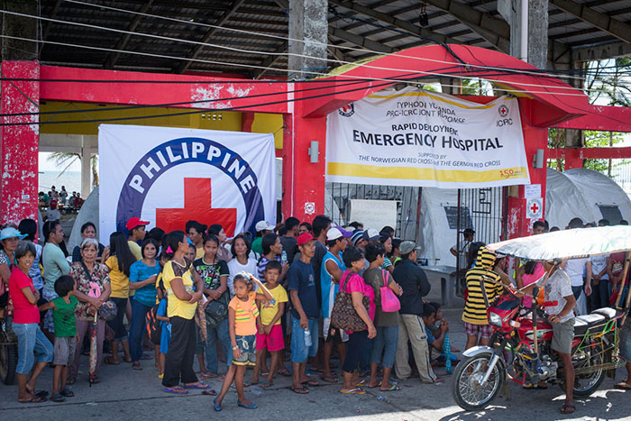

The Famine Situation in Africa
March 2017
East Africa is currently experiencing one of the worst droughts in living memory.
Conflict has also forced millions of people to flee their homes.
To navigate through people's stories in each country, you can scroll through the pages or select a section at the top.
East Africa Situation
Essential items such as jerry cans and hygiene kits being distributed by the Philippine Red Cross in Isabel, near Ormoc in Leyte shortly after the typhoon hit. Photo credit: Netherlands Red Cross
A young boy holds aloft a jerry can following a relief distribution in Isabel, Leyte. Photo credit: Netherlands Red Cross
Somalia: famine looms large
The spectre of famine has again reared its head in Somalia, only six years after a devastating famine killed more than a quarter of a million people in the east African nation.
Two consecutive poor rainy seasons have resulted in severe water shortages. Thousands of animals – essential for people’s livelihoods – have perished due to the lack of water and pasture. Crops too have failed.
The rainy season is due to begin in April. If the rains fail again, then famine is a very real prospect. But even if the rains do come, they will do little to alleviate the suffering.
The UN estimates that up to 6.2 million people are in need of urgent help – over half of Somalia’s population.
Large numbers of people are on the move searching for food and water.
Parts of the country are also blighted by protracted conflict. Where the fighting is preventing humanitarian agencies from reaching people in need, the situation is particularly severe.
A lifeline for children
More than 70,000 children are at risk of dying from the most severe form of malnutrition.
At five months old, little Abdikaafi is one of them.
He weighs just three kilos – the normal weight of a newborn baby.
Mothers are looking on helplessly as their children lose the strength to eat.
The Red Cross is supporting specialist malnutrition centres across the region.
In many cases, they are the difference between a mother’s joy and a mother’s grief.
Red Cross in action
The International Red Cross Red Crescent Movement is working in communities across Somalia.
Over the past year, we have distributed food and essential household goods to nearly 390,000 people.
During the last year we also:
- Delivered cash to 102,432 people to buy food in local markets
- Delivered seeds and tools to 41,526 people
- Supported four hospitals to treat 5,000 weapon-wounded people
South Sudan: where fighting has led to famine
More than three years of brutal conflict has resulted in widespread hunger, large-scale displacement, and the loss of agriculture and livestock.
February’s declaration of famine in South Sudan – made jointly by three UN agencies – was the first anywhere in the world for six years. 100,000 people in Unity State are facing starvation.
In total, 5.9 million people are in need of urgent help across the country – this is set to rise to 6.5 million at the peak of the lean season in June.
Nine long minutes
The oversized oxygen mask covered her tiny face.
Her breathing – which at first radiated pain – began to soften as she slept.
Jessica, a paediatric nurse from the International Committee of the Red Cross, swayed gently as she cradled the girl.
At five months old, little Nyanene was tiny – barely the size of a newborn baby.
“I’m so happy to see her sleep,” said Jessica. “She’s been through so much.”
In the background, a wounded air conditioner puffed limply, struggling against the heavy air in the emergency room.
Then, suddenly, the light in the room dropped from green fluorescent to grey shadow.
The generator died and with it Nyanene’s oxygen supply.
Jessica jumped up, checking her heart rate.
“If it’s under 60 we start CPR,” Jessica said.
Holding an airbag in her hands, Jessica pumped breaths into the child’s body.
Gbang, her assistant, pressed his two thumbs deep into the baby’s chest, pumping its heart.
“We’re going 15 minutes before we call it, okay?” said Jessica, before adding with calm, “that’s really good. You’re doing a really good job.”
Can we get the generator back on? A call is made but the dark remains.
Can you check the heart rate? What’s the heart rate? Jessica relieved Gbang and started pressing her thumbs into Nyanene’s chest.
This baby, the one Jessica knew was hungry for life, wasn’t responding. Her young mother sat on the bed, within arm’s length of her child.
As the clock ticked over to 2.20pm, Jessica, collecting herself for a beat, turned to her left and touched the mother’s leg.
Moments later, just nine minutes after cutting out, the fluorescent lights flicker on. Nine minutes was sadly too long for little Nyanene.

Reaching the most vulnerable
Hospitals in South Sudan are full of children like Nyanene and their families. Many are suffering from malnutrition, malaria, and the devastating effects of violence in their war-torn country.
The Red Cross is one of a few humanitarian agencies able to reach South Sudan’s most vulnerable people.
In December 2016, the Red Cross distributed emergency food to 11,000 families in Leer, Unity state – the epicentre of South Sudan’s famine.
Seeds and tools were distributed to some 5,000 households in the surrounding area. Fishing kits, tarpaulins and mosquito nets went to almost 3,000 households.
This was made possible thanks to the constant dialogue with all parties involved in the conflict.
Last year the Red Cross also:
- Distributed over 950,000 food rations – some 13,000 tonnes of food – the equivalent in weight of more than 1,000 double decker buses,
- Provided nearly 234,000 people with seeds and tools for farming, and some 90,500 people with fishing kits,
- Vaccinated or treated some 1.1 million heads of livestock to help communities rebuild their livelihoods,
- Helped 100,000 people gain access to safe drinking water.
Nigeria: the hungry cost of conflict
After years of conflict, severe food shortages are now a reality in north-eastern Nigeria. Some 5.1 million people are currently affected.
The conflict has uprooted more than 2 million as people move in search of safety and food, both within Nigeria and across borders in the region surrounding Lake Chad.
Around 90 per cent of those have found shelter with host communities that are among the poorest in the world.
This has placed great pressure on already weak infrastructure and resources, giving way to disease and food shortages.
Caught up in the crisis
An estimated 450,000 children are suffering from severe acute malnutrition in Nigeria.
When one-year-old Aboubacar was weighed at the state hospital, he weighed only 10.4 pounds – the average weight of a 1-month-old baby.
His family had made it to an informal camp outside Maiduguri after fleeing violence a few months earlier. But since arriving, they had struggled to find enough food to survive.
Sixteen days after first arriving in hospital, Aboubacar sadly died.
Across the region, other families face similar anguish.
Red Cross in action
The International Committee of the Red Cross has responded to the humanitarian crisis unfolding in north-eastern Nigeria.
In 2016, we distributed food and essential household goods to the people most in need.
We also:
- Treated over 12,000 children under the age of five suffering from severe acute malnutrition.
- Assisted over 350,000 people to gain access to water and improved their sanitation and hygiene.
- Provided medical attention to 500,000 people at 16 ICRC-supported health care centres and nine mobile clinics.
Yemen: life on the edge
Conflict has left nearly 70 per cent of Yemen’s population in need of humanitarian aid.
More than 14 million people do not have enough food, including 3.3 million mothers and children who are acutely malnourished.
The situation is particularly serious in areas of the country where the fighting is most brutal. There is almost no food available in some places and the insecurity means humanitarian agencies cannot reach people in need.

“There is no food”
Ahmed Ali, his wife and children live in a tent after fighting forced them to flee their home. Earning a pittance working as a cobbler, Ahmed said: “I keep hoping we can soon go back to our home town and the peaceful lives we used to lead.
“Life here is very difficult. There is no water, no food, no medicine and no stability.”

Red Cross in action
The International Committee of the Red Cross and the Yemen Red Crescent have helped 3.3 million people in Yemen:
- Over 210,430 people have received food rations such as rice, beans, lentils, oil, tea and sugar,
- 105,000 people have received essential supplies such as blankets, kitchen utensils, water containers and personal hygiene items including soap,
- We repaired damaged water points and distributed water purification materials to supply clean water to 3.3 million people,
- Over 21,900 people in one of the country’s worst-affected areas received free health care, including over 4,600 pregnant women and their babies,
- 220,600 people in farming areas received helped with irrigation, seeds and tools, and livestock vaccinations,
- Monthly medical supplies to 20 health centres enabled them to treat more than 292,450 people.
Kenya
The implications of the impending dry season are particularly worrying for some agricultural communities in Kenya. Food prices are already at record highs. An estimated 2.7 million people are currently acutely food insecure in Kenya, and this is expected to have long-term impacts on health, nutrition, household purchasing power and security.
test
Ethiopia
Like Kenya and Somalia, Ethiopia has also been affected by an El Nino-induced drought in the region. Below normal rainfall is expected in the southern and south-eastern parts of the country and will further limit the availability of water and pasture in the coming months. The drought is primarily affecting pastoralist and agro-pastoralist communities. 304,300 children are expected to require treatment for Severe Acute Malnutrition. Ethiopia is also dealing with an influx of refugees from its neighbours. There are currently 793,321 refugees in the country. In January, 3,062 refugees from Somalia arrived in Ethiopia, fleeing conflict and food insecurity. Children constituted 72 per cent of the new arrivals.